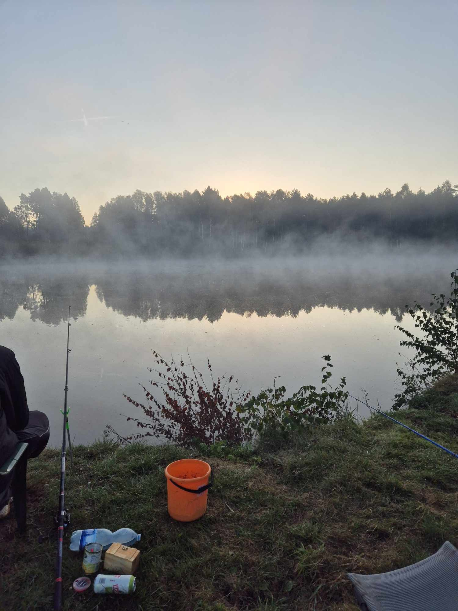
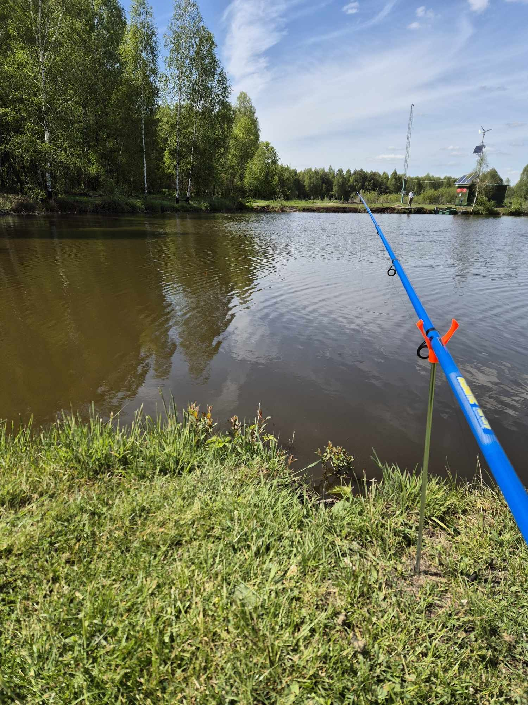
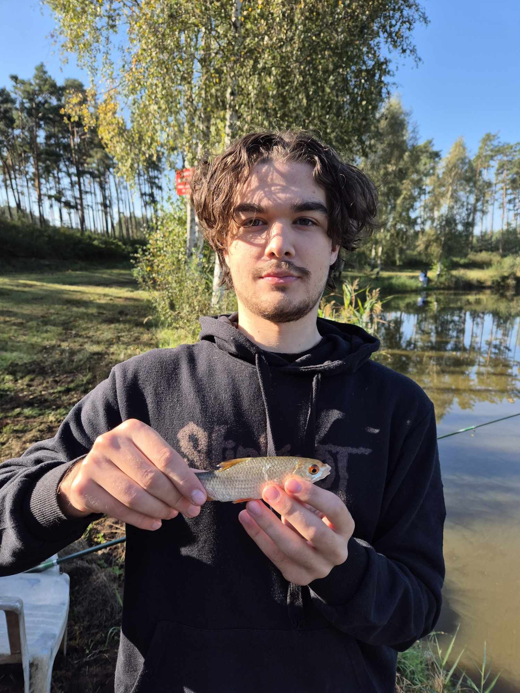
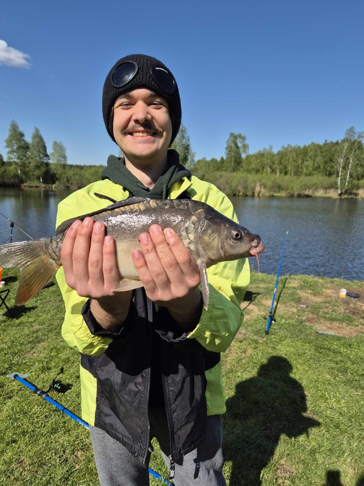
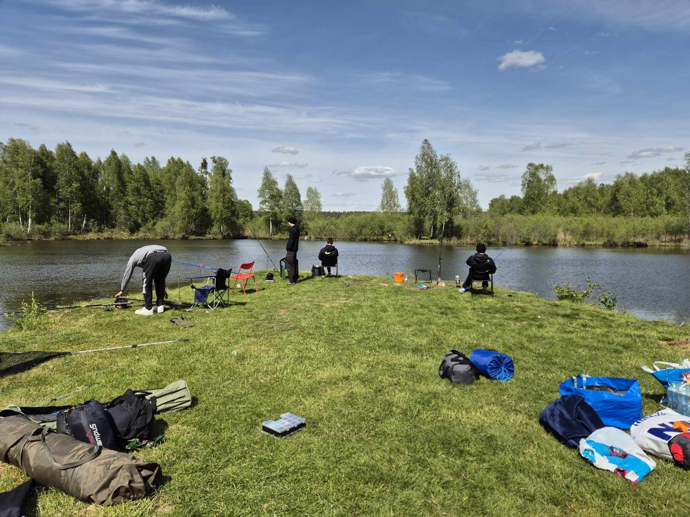
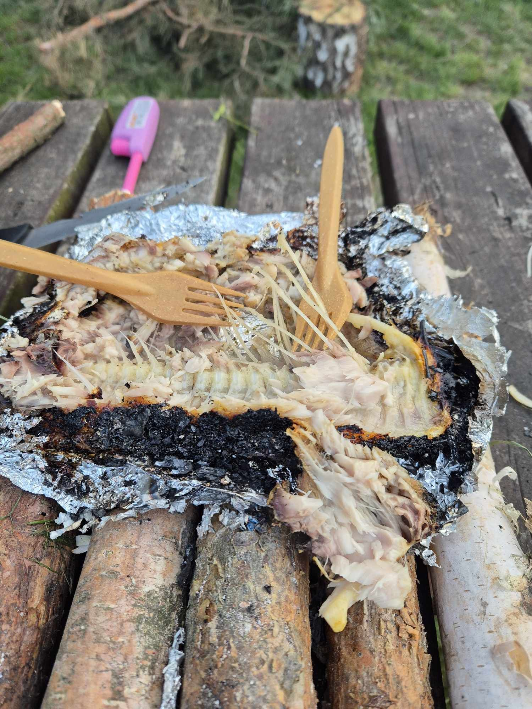

Cześć! Mam na imię Kamil i jestem początkującym wędkarzem.
Choć jestem dopiero na początku drogi, wędkarstwo od razu mnie wciągnęło i stało się ważną częścią mojego życia. To coś więcej niż tylko łowienie ryb – to sposób na spędzenie czasu w ciszy, z dala od zgiełku, w bliskości z naturą. Pierwsze wyprawy nie były łatwe – splątane żyłki, zerwane zestawy, brak brań. Ale z każdą kolejną wizytą nad wodą uczę się czegoś nowego. Eksperymentuję, rozmawiam z bardziej doświadczonymi wędkarzami i z satysfakcją patrzę, jak z czasem pojawiają się pierwsze sukcesy. Na tej stronie chcę dzielić się moimi doświadczeniami – zarówno sukcesami, jak i porażkami. Może kogoś zainspiruję do rozpoczęcia własnej wędkarskiej przygody. Zapraszam do śledzenia moich wypraw i galerii zdjęć. Każda ryba to dla mnie nowa historia, a każdy wypad nad wodę to coś, na co czekam z niecierpliwością.
 Moje wyprawy
Najczęściej łowię w okolicach jezior i rzek w moim regionie. Moja pierwsza zdobycz to płotka złowiona na spławik.
W maju 2025 udało mi się złowić karpia o długości ok. 40 cm – to mój rekord!
Najczęściej jeżdzę na ryby z moimi kumplami. Dobrze mieć swoich kompanów do łowienia, zawsze można liczyć na wzajemną pomoc i ciekawą rozmowę.
Oczywiście, jeśli pozwalają na to zasady łowiska próbujemy różnych ryb. Tutaj przykładowo (s)pieczony karp, wyjątkowo nie smakował szlamem.
Używany sprzęt
- Wędka: Mikado Princess 270
- Kołowrotek: Shimano FX 2500
- Przynęty: robaki białe i czerwone, kukurydza
- Zanęty: karpiowe truskawkowe, waniliowe itp.
- Techniki: głównie spławik i klasyczny feeder